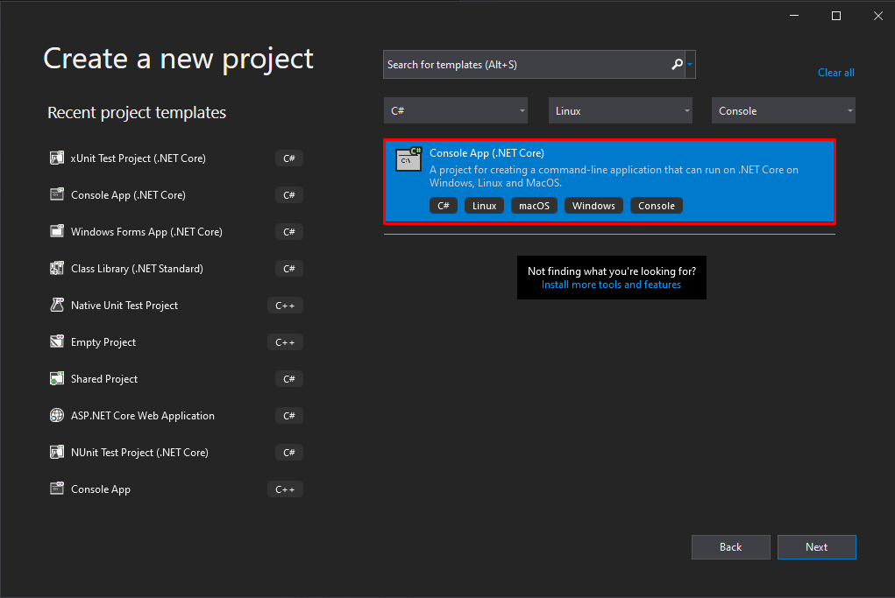
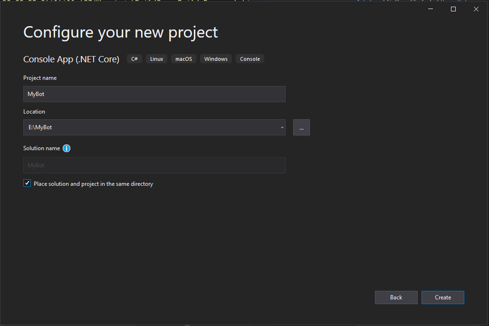
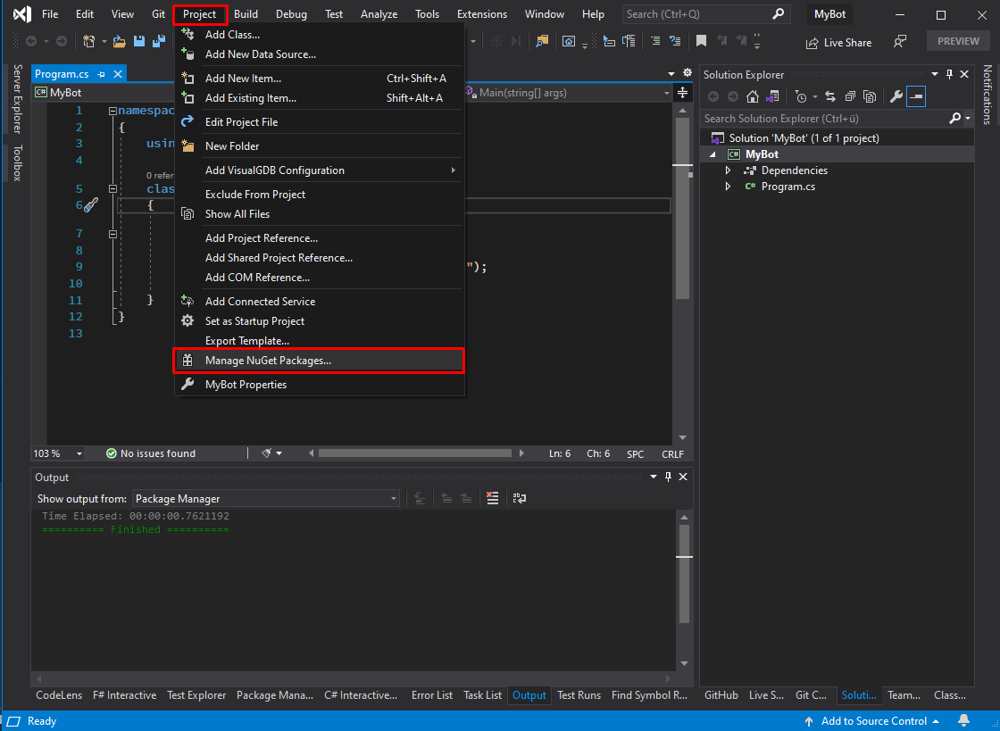

Basic Bot
Preparations (Visual Studio Code)
In this example, we will create our first bot step-by-step using Visual Studio Code.
Run the following commands in the Visual Studio Terminal, or your favorite shell:
# Creates a new console project, make sure you are currently in a directory you want to create your bot in.
dotnet new console
# Add the Strade NuGet package
dotnet add package Strade
Preparations (Visual Studio)
In this example, we will create our first bot step-by-step using Visual Studio.
Create the project
First, we create a new project/solution for the bot. We recommend using .NET Core to allow cross-platform compatibility.
1. Step Create new project
- Open Visual Studio.
- On the start window, choose
Create a New Project. Create a new solution with clicking onFile > New > Project. - Search
Console-App (.NET Core)and double-click it.

2. Step Configure Project
- Give your project a cool name (e.g.
SuperBot). - Adjust other settings (if needed).
- Click on
Continue.

3. Step Install Strade package
- Right Click your Project (not the Solution)
- Click on
Manage NuGet-Packages... - Search "Strade" package
- Install the latest package version.


Done! Now you can start with your first Bot!
Connecting to Discord
The class for creating bots is the DiscordClient class.
Now we connect to the Discord Gateway: The Discord Gateway is a real-time WebSocket server which notifies over created messages, guilds the bot joined, etc. The bot will operate with the Gateway and execute your actions.
using Strade;
// Create the discord client, load authentication credentials from the environment variables; The
// default environment variable is 'BOT_TOKEN'. The 'using' keyword ensures that the client is
// disposed at the end.
using var client = new DiscordClient(AuthenticationCredentials.FromEnvironment());
// Connect to the discord gateway. You can close the application or press [CTRL] + [C] to exit the bot
await client.RunAsync();
NOTE
The using-Statement around the DiscordClient is used to free resources by the DiscordClient.
Now hit 'Run' or 'F5' to run your bot! Now your bot should come online.
Adding some more functionality
A bot that does nothing is not very productive. So let us add some basic functionality:
NOTE
Strade uses events to notify you of events that occur: For example when a message was sent, when a channel was created, and much more. You can subscribe to those events to add some code to handle them.
using Strade;
// Create the discord client, load authentication credentials from the environment variables; The
// default environment variable is 'BOT_TOKEN'. The 'using' keyword ensures that the client is
// disposed at the end.
using var client = new DiscordClient(AuthenticationCredentials.FromEnvironment());
// Subscribe to the MessageReceived event of the DiscordClient.
client.MessageReceived += async (sender, eventArgs) =>
{
// Check if our message contains the term '!hello'
if (eventArgs.Message.Content.Equals("!hello"))
{
// retrieve the channel the message was sent in
var channel = await eventArgs.Channel.GetAsync();
// greet the user that send the !hello 'command'
await channel.SendMessageAsync($"Hello, {eventArgs.Message.Author}!");
}
};
// Connect to the discord gateway. You can close the application or press [CTRL] + [C] to exit the bot
await client.RunAsync();